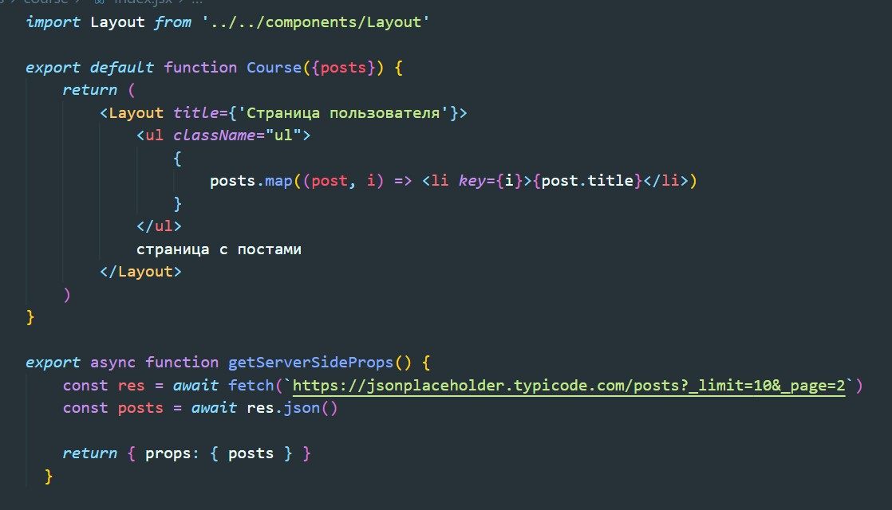

Если мы используем SSR то для получения данных от API лучше всего использовать getServerSideProps.
Как видите, getServerSideProps похож на getStaticProps, но разница в том, что getServerSideProps запускается при каждом запросе, а не во время сборки.
